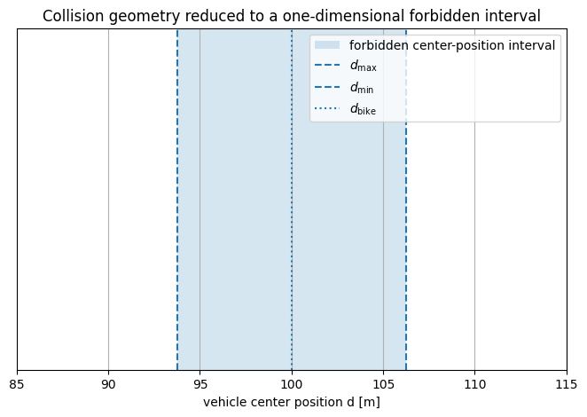
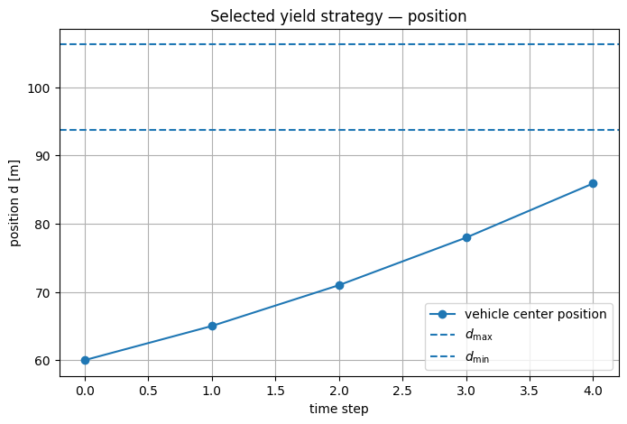
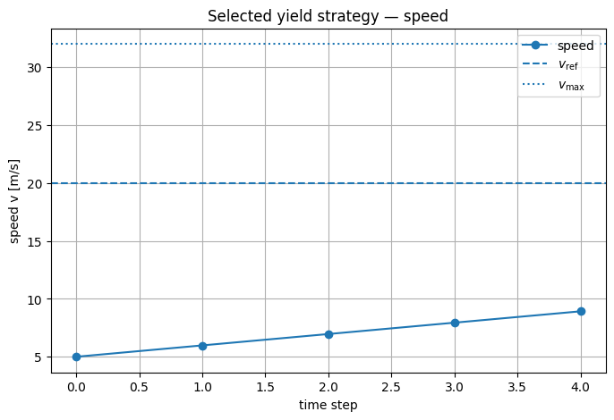
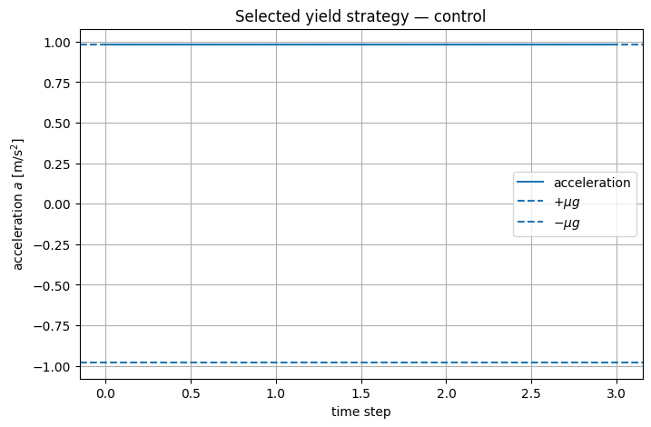
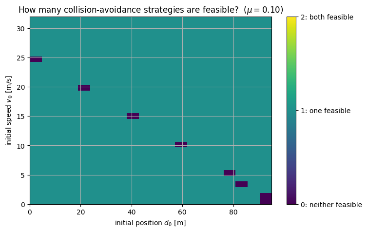
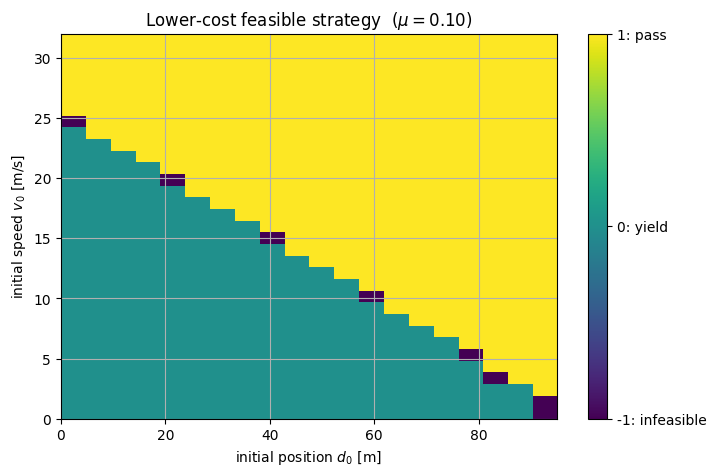
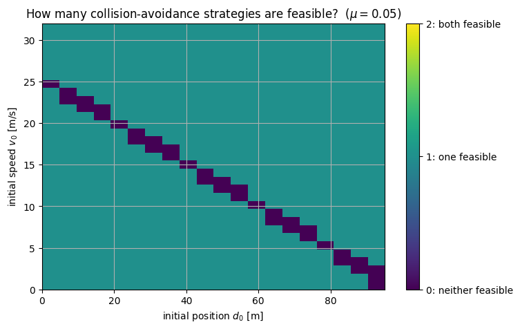
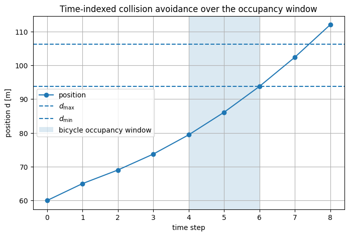
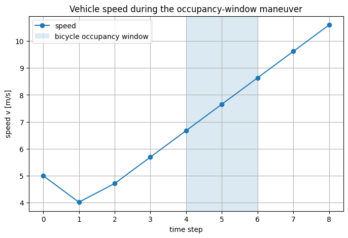

from pathlib import Path
import sys
import numpy as np
import matplotlib.pyplot as plt
ROOT = Path.cwd().resolve()
if ROOT.name == "notebooks":
ROOT = ROOT.parent
sys.path.insert(0, str(ROOT / "src"))
from advanced_mpc_lmpc.collision import (
conflict_bounds,
vehicle_matrices,
solve_collision_strategy,
choose_collision_strategy,
strategy_grid,
terminal_position_extrema_no_speed_limits,
)
np.set_printoptions(precision=5, suppress=True)
plt.rcParams.update({
"figure.figsize": (8, 5),
"axes.grid": True,
})
Learning objectives
After completing this notebook, you should be able to:
- derive the longitudinal conflict interval from vehicle and crossing geometry;
- formulate the double-integrator model and its explicit-Euler discretization;
- interpret
|a_k|\le \mu g
as an idealized friction-limited actuation constraint; 4. write the finite-horizon velocity-tracking/effort cost; 5. explain why collision avoidance is a disjunctive nonconvex constraint; 6. formulate the yield and pass alternatives as separate convex QPs; 7. explain why enumerating two QPs is equivalent to a one-binary-variable mixed-integer formulation; 8. derive a Big-M encoding and understand why oversized Big-M constants are undesirable; 9. distinguish:
- remaining before the conflict region,
- stopping,
- the looser center-line condition d_N\le d_{\mathrm{bike}};
- derive analytical terminal-position bounds for the Euler model;
- explain rigorously why decreasing \mu shrinks the feasible maneuver set;
- distinguish feasibility changes from objective-weight changes;
- build and interpret a feasibility/strategy map over initial conditions;
- extend the terminal-time formulation to a full bicycle-occupancy window;
- identify the limitations of the deterministic one-dimensional model.
Table of Contents
- Part I — Scene geometry — I.1 Problem data · I.2 Deriving the collision-free bounds · I.3 Why the safe set is nonconvex
- Part II — Vehicle model — II.1 Continuous-time longitudinal dynamics · II.2 Discretization
- Part III — Constraints and objective — III.1 Speed constraints · III.2 Friction-limited acceleration · III.3 Cost function
- Part IV — The logical maneuver choice — IV.1 Two convex strategy problems · IV.2 A compact formulation with a binary variable · IV.3 A more general symmetric Big-M encoding · IV.4 Why “very large Big-M” is not mathematically free · IV.5 Why we solve two QPs instead
- Part V — The nominal scenario — V.1 Which yield condition? Geometric versus center-line bound · V.2 A horizon that ends when the bicycle arrives · V.3 Why the pass maneuver is impossible from this initial condition
- Part VI — Analytical reachability under the Euler model — VI.1 Closed-form velocity · VI.2 Closed-form terminal position · VI.3 Terminal-position extrema when speed bounds are inactive · VI.4 Width of the controllable terminal-position interval
- Part VII — Friction and feasibility — VII.1 A set-inclusion argument · VII.2 Strategy maps over initial conditions · VII.3 Lower friction
- Part VIII — What do Q, R, and P actually change? — VIII.1 Objective weights do not change feasibility · VIII.2 A state where both strategies are feasible
- Part IX — “Yield” is not automatically “stop” — IX.1 Three distinct mathematical statements
- Part X — General bicycle-occupancy window — X.1 From a terminal-time condition to a time-indexed safety condition · X.2 Why one binary variable is meaningful here
- Part XI — Interpreting infeasibility — XI.1 “Neither strategy is feasible” has a precise but limited meaning
- Part XII — Model limitations and extensions — XII.1 Deterministic bicycle timing · XII.2 Friction uncertainty · XII.3 One-dimensional point-mass model
- Part XIII — Common pitfalls — XIII.1 Pitfall: the double-integrator dynamics make the whole problem convex · XIII.2 Pitfall: lower \mu only changes comfort · XIII.3 Pitfall: changing Q or R changes the feasible region · XIII.4 Pitfall: “yield” means v_N=0 · XIII.5 Pitfall: d_N\le d_{\mathrm{bike}} is the same as geometric collision avoidance · XIII.6 Pitfall: an enormous Big-M can only help · XIII.7 Pitfall: solver infeasibility means real-world collision is unavoidable
- Part XIV — Check your understanding
- Part XV — Exercises
- Part XVI — Scope and references
Part I — Scene geometry
I.1 Problem data
This example uses
d_{\mathrm{bike}}=100\ \mathrm{m},
w_{\mathrm{bike}}=8\ \mathrm{m},
\qquad
l_{\mathrm{car}}=4.5\ \mathrm{m},
t_{\min}=4\ \mathrm{s},
\qquad
v_{\max}=32\ \mathrm{m/s},
T_s=1\ \mathrm{s},
\qquad
g=9.81\ \mathrm{m/s^2}.
Here d_{\mathrm{bike}} is the center of the bicycle conflict region, w_{\mathrm{bike}} its width measured along the vehicle's travel direction, l_{\mathrm{car}} the vehicle length, and t_{\min} the time at which the bicycle enters the conflict region.
The vehicle center position is d.
d_bike = 100.0
w_bike = 8.0
l_car = 4.5
d_max, d_min = conflict_bounds(
d_bike=d_bike,
l_car=l_car,
w_bike=w_bike,
)
print("near-side collision-free center bound d_max =", d_max, "m")
print("far-side collision-free center bound d_min =", d_min, "m")
print("forbidden center-position width =", d_min - d_max, "m")
near-side collision-free center bound d_max = 93.75 m far-side collision-free center bound d_min = 106.25 m forbidden center-position width = 12.5 m
I.2 Deriving the collision-free bounds
The vehicle occupies the longitudinal interval
\left[
d-\frac{l_{\mathrm{car}}}{2},
\;
d+\frac{l_{\mathrm{car}}}{2}
\right].
The bicycle conflict region occupies
\left[
d_{\mathrm{bike}}-\frac{w_{\mathrm{bike}}}{2},
\;
d_{\mathrm{bike}}+\frac{w_{\mathrm{bike}}}{2}
\right].
There are two ways to avoid overlap.
Yield side
The front of the car remains before the near edge of the conflict region:
d+\frac{l_{\mathrm{car}}}{2}
\le
d_{\mathrm{bike}}-\frac{w_{\mathrm{bike}}}{2}.
Hence
\boxed{
d
\le
d_{\max}
=
d_{\mathrm{bike}}
-\frac{l_{\mathrm{car}}+w_{\mathrm{bike}}}{2}.
}
Pass side
The rear of the car has cleared the far edge:
d-\frac{l_{\mathrm{car}}}{2}
\ge
d_{\mathrm{bike}}+\frac{w_{\mathrm{bike}}}{2},
so
\boxed{
d
\ge
d_{\min}
=
d_{\mathrm{bike}}
+\frac{l_{\mathrm{car}}+w_{\mathrm{bike}}}{2}.
}
For these parameters,
d_{\max}=93.75\ \mathrm m,
\qquad
d_{\min}=106.25\ \mathrm m.
plt.figure()
plt.axvspan(d_max, d_min, alpha=0.18, label="forbidden center-position interval")
plt.axvline(d_max, linestyle="--", label=r"$d_{\max}$")
plt.axvline(d_min, linestyle="--", label=r"$d_{\min}$")
plt.axvline(d_bike, linestyle=":", label=r"$d_{\mathrm{bike}}$")
plt.xlim(85, 115)
plt.ylim(-1, 1)
plt.yticks([])
plt.xlabel("vehicle center position d [m]")
plt.title("Collision geometry reduced to a one-dimensional forbidden interval")
plt.legend()
plt.show()

I.3 Why the safe set is nonconvex
During bicycle occupancy, the collision-free set for the vehicle center is
\mathcal S_{\mathrm{safe}}
=
(-\infty,d_{\max}]
\cup
[d_{\min},\infty).
It is the union of two convex half-lines, but the union itself is nonconvex.
Take
d^{(1)}=d_{\max}-1,
\qquad
d^{(2)}=d_{\min}+1.
Both are safe.
Their midpoint is
\frac{d^{(1)}+d^{(2)}}{2}
=
d_{\mathrm{bike}},
which lies inside the conflict region and is unsafe.
Thus a convex combination of two safe points need not be safe.
This simple geometric fact is the reason a binary/logical decision naturally appears.
Part II — Vehicle model
II.1 Continuous-time longitudinal dynamics
We use a point-mass longitudinal model
\dot d(t)=v(t),
\dot v(t)=a(t).
The state is
x=
\begin{bmatrix}
d\\v
\end{bmatrix},
and the control input is acceleration
u=a.
II.2 Discretization
We discretize with explicit Euler and T_s=1 s:
\boxed{
d_{k+1}=d_k+T_sv_k,
}
\boxed{
v_{k+1}=v_k+T_sa_k.
}
Therefore
x_{k+1}=Ax_k+Ba_k
with
A=
\begin{bmatrix}
1&T_s\\
0&1
\end{bmatrix},
\qquad
B=
\begin{bmatrix}
0\\T_s
\end{bmatrix}.
A subtle consequence is that the acceleration a_k changes the next velocity but does not directly enter d_{k+1} in this discretization.
Ts = 1.0
A_euler, B_euler = vehicle_matrices(
Ts=Ts,
discretization="euler",
)
print("A =")
print(A_euler)
print("\nB =")
print(B_euler)
A = [[1. 1.] [0. 1.]] B = [[0.] [1.]]
Modeling extension — exact zero-order-hold discretization
Explicit Euler is not the only possible choice.
For the continuous double integrator with acceleration held constant over one sample, the exact zero-order-hold discretization is
d_{k+1}
=
d_k+T_sv_k+\frac12T_s^2a_k,
v_{k+1}
=
v_k+T_sa_k,
so
B_{\mathrm{ZOH}}
=
\begin{bmatrix}
\frac12T_s^2\\
T_s
\end{bmatrix}.
We keep the simpler Euler update throughout this notebook, and Part VI derives closed-form reachability results for it. The trade-off is accuracy: because the horizon is short and T_s=1 s, the discretization choice can visibly shift feasibility boundaries (see Exercise 8).
For standard discrete-time modeling discussions, see a digital-control text such as Franklin, Powell & Workman; vehicle-modeling context is also discussed in Rajamani, Vehicle Dynamics and Control.
_, B_zoh = vehicle_matrices(
Ts=Ts,
discretization="zoh",
)
print("Euler B:")
print(B_euler)
print("\nExact ZOH B:")
print(B_zoh)
Euler B: [[0.] [1.]] Exact ZOH B: [[0.5] [1. ]]
Part III — Constraints and objective
III.1 Speed constraints
We impose
\boxed{
0\le v_k\le v_{\max},
}
with
v_{\max}=32\ \mathrm{m/s}.
The lower bound prevents reversing in this simplified one-dimensional scene.
III.2 Friction-limited acceleration
The acceleration is bounded by
\boxed{
-\mu g
\le
a_k
\le
\mu g.
}
For
\mu=0.10,
the available magnitude is
|a_k|
\le
0.981\ \mathrm{m/s^2}.
For
\mu=0.05,
it becomes only
|a_k|
\le
0.4905\ \mathrm{m/s^2}.
This is an intentionally simplified friction model:
- acceleration and braking limits are symmetric;
- \mu is known and constant;
- aerodynamic drag and powertrain limits are ignored;
- combined longitudinal/lateral tire usage is ignored.
Those assumptions are acceptable for this pedagogical CFTOC example, but they should not be confused with a full vehicle/tire model.
g = 9.81
for mu in [0.10, 0.05]:
print(
f"mu={mu:0.2f} -> acceleration interval "
f"[{-mu*g:0.4f}, {mu*g:0.4f}] m/s^2"
)
mu=0.10 -> acceleration interval [-0.9810, 0.9810] m/s^2 mu=0.05 -> acceleration interval [-0.4905, 0.4905] m/s^2
III.3 Cost function
We use the weights
R=1,
\qquad
Q=3,
\qquad
P=3,
and reference speed
v_{\mathrm{ref}}=20\ \mathrm{m/s}.
The finite-horizon objective is
\boxed{
J
=
\sum_{k=0}^{N-1}
R a_k^2
+
\sum_{k=0}^{N-1}
Q(v_k-v_{\mathrm{ref}})^2
+
P(v_N-v_{\mathrm{ref}})^2.
}
Interpretation:
- Ra_k^2 penalizes aggressive acceleration/braking;
- Q(v_k-v_{\mathrm{ref}})^2 rewards speed tracking during the maneuver;
- P(v_N-v_{\mathrm{ref}})^2 penalizes terminal speed error.
The position does not appear directly in the cost. Position enters through the collision-avoidance constraints.
Part IV — The logical maneuver choice
IV.1 Two convex strategy problems
If the strategy is fixed in advance, each problem is a convex QP.
Yield strategy
During bicycle occupancy,
\boxed{
d_k\le d_{\max}.
}
Pass strategy
During bicycle occupancy,
\boxed{
d_k\ge d_{\min}.
}
For either fixed strategy:
- dynamics are linear;
- state/input constraints are linear;
- the objective is convex quadratic.
The nonconvexity appears only when we ask the optimizer to choose between the two alternatives.
IV.2 A compact formulation with a binary variable
Introduce a binary strategy variable s\in\{0,1\} and associate
s=1
with the yield strategy and
s=0
with the pass strategy.
A compact Big-M expression is
\boxed{
(1-s)d_{\min}
\le
d_k
\le
d_{\max}+(1-s)D,
}
for each conflict time, with a sufficiently large positive constant D.
If s=1:
0\le d_k\le d_{\max},
so the yield-side upper bound is active.
If s=0:
d_{\min}\le d_k\le d_{\max}+D,
so the pass-side lower bound is active while the upper bound is intended to become inactive.
The lower bound 0\le d_k in the yield case relies on the scene's nonnegative longitudinal coordinate convention.
IV.3 A more general symmetric Big-M encoding
A standard alternative is
d_k
\le
d_{\max}
+
M(1-s),
d_k
\ge
d_{\min}
-
Ms.
Then:
s=1 — yield
d_k\le d_{\max},
while the pass constraint is relaxed to
d_k\ge d_{\min}-M.
s=0 — pass
d_k\ge d_{\min},
while the yield constraint is relaxed to
d_k\le d_{\max}+M.
Because the objective is quadratic and s is binary, this specific formulation is a mixed-integer quadratic program (MIQP).
The broader term mixed-integer problem (MIP) is also common.
IV.4 Why “very large Big-M” is not mathematically free
A valid M must be large enough to deactivate the inactive branch.
But an unnecessarily huge value can:
- weaken the continuous relaxation used inside branch-and-bound;
- worsen numerical conditioning;
- make solver tolerances more troublesome;
- slow mixed-integer optimization.
A generous round value such as M=5000 is valid here, because every reachable position lies within a few hundred meters of the conflict region. That is simple and adequate for a small illustrative example.
In production hybrid MPC, one normally derives the smallest valid bounds available from the known state/input envelope.
For systematic treatments of logical constraints in predictive control, see Borrelli, Bemporad & Morari, Predictive Control for Linear and Hybrid Systems, and Bemporad & Morari (1999).
IV.5 Why we solve two QPs instead
There is only one binary decision:
s\in\{0,1\}.
Therefore the mixed problem is exactly
\min
\left\{
J_{\mathrm{yield}}^\star,
J_{\mathrm{pass}}^\star
\right\},
where infeasible alternatives are discarded.
So we can:
- solve the yield QP;
- solve the pass QP;
- choose the lower-cost feasible solution.
For two modes, this is transparent, solver-independent, and mathematically equivalent to exhaustive enumeration of the binary variable.
It would not scale well to dozens of binary decisions, where enumeration would require up to
2^m
mode combinations.
Part V — The nominal scenario
V.1 Which yield condition? Geometric versus center-line bound
There are two natural ways to write the yield condition.
Geometric yield condition
Yielding uses
d_k\le d_{\max}
=
d_{\mathrm{bike}}
-\frac{l_{\mathrm{car}}+w_{\mathrm{bike}}}{2}.
This explicitly includes the vehicle/crossing geometry.
Looser center-line condition
A simpler variant only requires the vehicle center not to have passed the center of the crossing at the terminal step,
d_N\le d_{\mathrm{bike}}
for the yield branch.
That is a looser condition than the geometric collision-free bound.
In both cases, no terminal-speed constraint is imposed by default, so the yield branch does not enforce
v_N=0.
Accordingly, we use the geometrically collision-free d_{\max} as the default and label the looser center-line condition explicitly whenever it is used (Part IX).
We do not silently treat “yield” as “full stop.”
V.2 A horizon that ends when the bicycle arrives
The nominal scenario sets
T=t_{\min}=4\ \mathrm{s}.
Thus the finite-horizon problem terminates exactly when the bicycle begins entering the intersection.
In this special case, the strategy constraint is imposed only at
k=N.
More generally, the maneuver must hold throughout an occupancy window
k\in[t_{\min},t_{\max}].
We first study the terminal-time structure, then extend it to a full window in Part X.
x0 = np.array([60.0, 5.0])
nominal_parameters = dict(
N=4,
Ts=1.0,
mu=0.10,
v_max=32.0,
v_ref=20.0,
Qv=3.0,
Ru=1.0,
Pv=3.0,
discretization="euler",
yield_boundary="geometric",
)
best, solutions = choose_collision_strategy(
x0,
**nominal_parameters,
)
for sol in solutions:
print(
f"{sol.strategy:5s}: "
f"feasible={sol.success}, "
f"cost={sol.objective}, "
f"terminal state={sol.X[-1]}"
)
print("\nselected strategy:",
None if best is None else best.strategy)
yield: feasible=True, cost=2582.5619340000003, terminal state=[85.886 8.924] pass : feasible=False, cost=inf, terminal state=[85.886 8.924] selected strategy: yield
if best is None:
raise RuntimeError("Expected at least one feasible strategy.")
t_state = np.arange(best.X.shape[0])
t_input = np.arange(best.U.shape[0])
plt.figure()
plt.plot(t_state, best.X[:, 0], marker="o", label="vehicle center position")
plt.axhline(d_max, linestyle="--", label=r"$d_{\max}$")
plt.axhline(d_min, linestyle="--", label=r"$d_{\min}$")
plt.xlabel("time step")
plt.ylabel("position d [m]")
plt.title(f"Selected {best.strategy} strategy — position")
plt.legend()
plt.show()
plt.figure()
plt.plot(t_state, best.X[:, 1], marker="o", label="speed")
plt.axhline(20.0, linestyle="--", label=r"$v_{\mathrm{ref}}$")
plt.axhline(32.0, linestyle=":", label=r"$v_{\max}$")
plt.xlabel("time step")
plt.ylabel("speed v [m/s]")
plt.title(f"Selected {best.strategy} strategy — speed")
plt.legend()
plt.show()
plt.figure()
plt.step(t_input, best.U[:, 0], where="post", label="acceleration")
plt.axhline(0.10 * g, linestyle="--", label=r"$+\mu g$")
plt.axhline(-0.10 * g, linestyle="--", label=r"$-\mu g$")
plt.xlabel("time step")
plt.ylabel(r"acceleration $a$ [m/s$^2$]")
plt.title(f"Selected {best.strategy} strategy — control")
plt.legend()
plt.show()



V.3 Why the pass maneuver is impossible from this initial condition
For
x_0=
\begin{bmatrix}
60\\5
\end{bmatrix},
even maximum acceleration over the short horizon cannot move the vehicle center beyond
d_{\min}=106.25\ \mathrm m
by t=4 s under the explicit-Euler model.
We can see this directly from the dynamics rather than relying only on the numerical solver.
Part VI — Analytical reachability under the Euler model
VI.1 Closed-form velocity
From
v_{k+1}=v_k+T_sa_k,
we obtain
\boxed{
v_k
=
v_0
+
T_s
\sum_{j=0}^{k-1}a_j.
}
VI.2 Closed-form terminal position
Using
d_{k+1}=d_k+T_sv_k,
we have
d_N
=
d_0
+
T_s\sum_{k=0}^{N-1}v_k.
Substituting the velocity expansion,
\boxed{
d_N
=
d_0
+
NT_sv_0
+
T_s^2
\sum_{j=0}^{N-2}
(N-1-j)a_j.
}
Notice:
\boxed{
a_{N-1}
\text{ does not affect }d_N
}
under the explicit-Euler position update.
It affects v_N, but the final position has already been computed from v_{N-1}.
That is a discretization-specific property and is worth understanding before interpreting the optimization results.
VI.3 Terminal-position extrema when speed bounds are inactive
Let
a_{\max}=\mu g.
To maximize terminal position, set all position-relevant accelerations to +a_{\max}.
To minimize it, set them to -a_{\max}.
Because
\sum_{r=1}^{N-1}r
=
\frac{N(N-1)}{2},
we obtain
\boxed{
d_N^{\max}
=
d_0+NT_sv_0
+
\mu gT_s^2
\frac{N(N-1)}{2},
}
and
\boxed{
d_N^{\min}
=
d_0+NT_sv_0
-
\mu gT_s^2
\frac{N(N-1)}{2}.
}
These formulas are exact for the Euler model provided the speed constraints do not become active.
d_lo, d_hi = terminal_position_extrema_no_speed_limits(
x0,
N=4,
Ts=1.0,
mu=0.10,
)
print("analytic d_4 minimum =", d_lo)
print("analytic d_4 maximum =", d_hi)
print("yield boundary =", d_max)
print("pass boundary =", d_min)
analytic d_4 minimum = 74.114 analytic d_4 maximum = 85.886 yield boundary = 93.75 pass boundary = 106.25
The maximum reachable terminal position is still below d_{\min}, so passing is dynamically impossible under the modeled constraints.
The yield branch is feasible.
This provides an analytical explanation of the solver result.
VI.4 Width of the controllable terminal-position interval
Ignoring active speed bounds,
d_N^{\max}-d_N^{\min}
=
\boxed{
\mu gT_s^2N(N-1).
}
The forbidden spatial gap has width
d_{\min}-d_{\max}
=
l_{\mathrm{car}}+w_{\mathrm{bike}}.
Therefore a necessary geometric condition for some initial state to have both terminal strategies reachable under this simplified calculation is
\mu gT_s^2N(N-1)
\ge
l_{\mathrm{car}}+w_{\mathrm{bike}}.
This gives the critical value
\boxed{
\mu_{\mathrm{crit}}
=
\frac{l_{\mathrm{car}}+w_{\mathrm{bike}}}
{gT_s^2N(N-1)}.
}
This threshold follows directly from the simplified reachability calculation above.
N = 4
mu_crit = (
(l_car + w_bike)
/ (g * Ts**2 * N * (N - 1))
)
width_mu_010 = 0.10 * g * Ts**2 * N * (N - 1)
width_mu_012 = 0.12 * g * Ts**2 * N * (N - 1)
print("critical mu (ignoring speed-bound activation):", mu_crit)
print("reachable terminal-position width at mu=0.10:", width_mu_010)
print("reachable terminal-position width at mu=0.12:", width_mu_012)
print("forbidden geometric gap:", l_car + w_bike)
critical mu (ignoring speed-bound activation): 0.10618416581719334 reachable terminal-position width at mu=0.10: 11.772000000000002 reachable terminal-position width at mu=0.12: 14.1264 forbidden geometric gap: 12.5
For the geometry of Part I,
\mu_{\mathrm{crit}}
\approx 0.106.
So at
\mu=0.10
the control authority is slightly too small for the two geometric strategy-feasible regions to overlap in this simplified no-speed-saturation calculation.
At
\mu=0.12,
overlap can occur.
This becomes useful when studying how the objective chooses between two simultaneously feasible maneuvers.
Part VII — Friction and feasibility
VII.1 A set-inclusion argument
Let
\mathcal U(\mu)
=
[-\mu g,\mu g].
If
0<\mu_1<\mu_2,
then
\boxed{
\mathcal U(\mu_1)
\subset
\mathcal U(\mu_2).
}
Every input sequence feasible under the lower-friction model is also admissible under the higher-friction model.
Therefore, with all other modeling assumptions unchanged,
\boxed{
\mathcal F(\mu_1)
\subseteq
\mathcal F(\mu_2),
}
where \mathcal F(\mu) denotes the set of initial conditions for which at least one modeled collision-avoidance strategy is feasible.
So the statement
lower friction enlarges the infeasible region
is not just an empirical observation from a plot; it follows directly from feasible-set inclusion.
VII.2 Strategy maps over initial conditions
We now solve the CFTOC over a grid of initial conditions
(d_0,v_0).
Instead of showing only the selected strategy, we keep two maps:
- number of feasible strategies: 0, 1, or 2;
- the lower-cost strategy among feasible alternatives.
This separates feasibility from preference.
How to read the maps
Each small colored rectangle corresponds to one initial condition
x_0=
\begin{bmatrix}
d_0\\v_0
\end{bmatrix}.
The horizontal axis is the initial vehicle position d_0 and the vertical axis is the initial speed v_0.
The first map does not show the optimal maneuver. It shows how many of the two modeled maneuvers are feasible:
0= neither yield nor pass is feasible;1= exactly one of the two maneuvers is feasible;2= both yield and pass are feasible.
The second map shows the lower-cost feasible maneuver:
-1= neither maneuver is feasible;0= yield has the lower optimal cost;1= pass has the lower optimal cost.
The numerical labels on the color bar are the important part. The actual displayed colors are only a plotting aid and have no physical meaning.
d_values = np.arange(0.0, 100.0, 5.0)
v_values = np.arange(0.0, 33.0, 1.0)
count_mu_010, best_mu_010 = strategy_grid(
d_values,
v_values,
N=4,
Ts=1.0,
mu=0.10,
v_max=32.0,
v_ref=20.0,
Qv=3.0,
Ru=1.0,
Pv=3.0,
discretization="euler",
yield_boundary="geometric",
)
plt.figure()
img = plt.imshow(
count_mu_010,
origin="lower",
aspect="auto",
extent=[
d_values[0], d_values[-1],
v_values[0], v_values[-1]
],
vmin=0,
vmax=2,
)
cbar = plt.colorbar(img, ticks=[0, 1, 2])
cbar.ax.set_yticklabels([
"0: neither feasible",
"1: one feasible",
"2: both feasible",
])
plt.xlabel(r"initial position $d_0$ [m]")
plt.ylabel(r"initial speed $v_0$ [m/s]")
plt.title(r"How many collision-avoidance strategies are feasible? ($\mu=0.10$)")
plt.show()

plt.figure()
img = plt.imshow(
best_mu_010,
origin="lower",
aspect="auto",
extent=[
d_values[0], d_values[-1],
v_values[0], v_values[-1]
],
vmin=-1,
vmax=1,
)
cbar = plt.colorbar(img, ticks=[-1, 0, 1])
cbar.ax.set_yticklabels([
"-1: infeasible",
"0: yield",
"1: pass",
])
plt.xlabel(r"initial position $d_0$ [m]")
plt.ylabel(r"initial speed $v_0$ [m/s]")
plt.title(r"Lower-cost feasible strategy ($\mu=0.10$)")
plt.show()

VII.3 Lower friction
Repeat the same experiment at
\mu=0.05.
count_mu_005, best_mu_005 = strategy_grid(
d_values,
v_values,
N=4,
Ts=1.0,
mu=0.05,
v_max=32.0,
v_ref=20.0,
Qv=3.0,
Ru=1.0,
Pv=3.0,
discretization="euler",
yield_boundary="geometric",
)
plt.figure()
img = plt.imshow(
count_mu_005,
origin="lower",
aspect="auto",
extent=[
d_values[0], d_values[-1],
v_values[0], v_values[-1]
],
vmin=0,
vmax=2,
)
cbar = plt.colorbar(img, ticks=[0, 1, 2])
cbar.ax.set_yticklabels([
"0: neither feasible",
"1: one feasible",
"2: both feasible",
])
plt.xlabel(r"initial position $d_0$ [m]")
plt.ylabel(r"initial speed $v_0$ [m/s]")
plt.title(r"How many collision-avoidance strategies are feasible? ($\mu=0.05$)")
plt.show()

n_grid = count_mu_010.size
infeasible_010 = np.sum(count_mu_010 == 0)
infeasible_005 = np.sum(count_mu_005 == 0)
print(
f"mu=0.10: {infeasible_010}/{n_grid} "
f"grid states have neither modeled strategy feasible"
)
print(
f"mu=0.05: {infeasible_005}/{n_grid} "
f"grid states have neither modeled strategy feasible"
)
print(
"infeasible states increased by",
infeasible_005 - infeasible_010
)
mu=0.10: 8/660 grid states have neither modeled strategy feasible mu=0.05: 36/660 grid states have neither modeled strategy feasible infeasible states increased by 28
The lower-\mu feasible set cannot become larger under this model, because the admissible control set has contracted.
The grid count above illustrates this; the set-inclusion argument of VII.1 guarantees it for every initial state, not only for the grid points.
Part VIII — What do Q, R, and P actually change?
VIII.1 Objective weights do not change feasibility
For a fixed:
- dynamic model;
- horizon;
- state constraints;
- input constraints;
- collision constraints;
changing
Q,\;R,\;P
changes only the objective.
Therefore it cannot create or destroy feasible trajectories.
In exact optimization,
\boxed{
\text{feasible set is independent of }Q,R,P.
}
What the weights can change is which feasible trajectory is optimal, and—if both maneuver branches are feasible—which strategy has lower cost.
This distinction is important when interpreting a strategy map.
VIII.2 A state where both strategies are feasible
Use a slightly larger friction coefficient
\mu=0.15
and initial state
x_0=
\begin{bmatrix}
30\\17
\end{bmatrix}.
For this state, both geometric strategies are feasible.
We now vary only the input penalty R.
x_trade = np.array([30.0, 17.0])
mu_trade = 0.15
for Ru in [0.1, 1.0, 1000.0]:
best_trade, sols_trade = choose_collision_strategy(
x_trade,
N=4,
Ts=1.0,
mu=mu_trade,
v_max=32.0,
v_ref=20.0,
Qv=3.0,
Ru=Ru,
Pv=3.0,
discretization="euler",
yield_boundary="geometric",
)
print(f"\nR={Ru}")
for sol in sols_trade:
print(
f" {sol.strategy:5s}: "
f"feasible={sol.success}, "
f"cost={sol.objective:.3f}, "
f"sum(a^2)={np.sum(sol.U[:,0]**2):.3f}"
)
print(" chosen:", best_trade.strategy)
R=0.1 yield: feasible=True, cost=220.800, sum(a^2)=6.923 pass : feasible=True, cost=36.693, sum(a^2)=5.781 chosen: pass R=1.0 yield: feasible=True, cost=226.877, sum(a^2)=6.225 pass : feasible=True, cost=41.764, sum(a^2)=5.520 chosen: pass R=1000.0 yield: feasible=True, cost=1563.444, sum(a^2)=1.291 pass : feasible=True, cost=5165.382, sum(a^2)=5.127 chosen: yield
With a small control-effort penalty, speed tracking dominates and one strategy can be preferred.
With a very large R, the optimizer strongly prefers the branch requiring less acceleration/braking effort, and the selected maneuver can change.
But both branches remain feasible throughout the experiment.
That is the correct separation:
\boxed{
\mu
\text{ changes control authority and feasibility;}
}
\boxed{
Q,R,P
\text{ change preference among feasible solutions.}
}
Part IX — “Yield” is not automatically “stop”
IX.1 Three distinct mathematical statements
These are often conflated in casual language.
A. Geometric yield
d_N\le d_{\max}.
The vehicle remains on the safe near side at the terminal conflict time.
B. Full stop before the conflict region
d_N\le d_{\max},
\qquad
v_N=0.
This is strictly more restrictive.
C. Looser center-line condition
The center-line variant of V.1 uses
d_N\le d_{\mathrm{bike}},
which is looser than the geometric bound because
d_{\mathrm{bike}}>d_{\max}.
We keep these three conditions separate instead of calling all three “stop.”
x_stop_demo = np.array([60.0, 5.0])
geometric_yield = solve_collision_strategy(
x_stop_demo,
"yield",
N=4,
mu=0.10,
terminal_stop=False,
yield_boundary="geometric",
)
full_stop = solve_collision_strategy(
x_stop_demo,
"yield",
N=4,
mu=0.10,
terminal_stop=True,
yield_boundary="geometric",
)
centerline_yield = solve_collision_strategy(
x_stop_demo,
"yield",
N=4,
mu=0.10,
terminal_stop=False,
yield_boundary="center_line",
)
print("geometric yield feasible :", geometric_yield.success)
print("full stop feasible :", full_stop.success)
print("center-line feasible :", centerline_yield.success)
if geometric_yield.success:
print("geometric-yield terminal state:", geometric_yield.X[-1])
if centerline_yield.success:
print("center-line terminal state:", centerline_yield.X[-1])
geometric yield feasible : True full stop feasible : False center-line feasible : True geometric-yield terminal state: [85.886 8.924] center-line terminal state: [85.886 8.924]
From this state, the vehicle can remain before the geometric conflict region but cannot reduce its speed all the way to zero within four seconds under the friction-limited acceleration bound.
Thus
\boxed{
\text{yield feasible}
\not\Rightarrow
\text{full stop feasible}.
}
Part X — General bicycle-occupancy window
X.1 From a terminal-time condition to a time-indexed safety condition
The nominal scenario of Part V terminates at
T=t_{\min}.
Suppose instead that the bicycle occupies the conflict region over
t\in[t_{\min},t_{\max}],
for example
t_{\min}=4,
\qquad
t_{\max}=6,
and our horizon continues beyond that interval.
Then yield should impose
\boxed{
d_k\le d_{\max},
\qquad
k=4,5,6,
}
not merely at the first conflict instant.
Likewise, the pass strategy requires
d_k\ge d_{\min}
throughout the conflict interval.
With the model constraint v_k\ge0, once the vehicle has passed beyond d_{\min} it cannot move backward, so the later pass inequalities are redundant but harmless. For the yield branch, however, enforcing the full occupancy window is essential.
x_window = np.array([60.0, 5.0])
window_best, window_solutions = choose_collision_strategy(
x_window,
N=8,
Ts=1.0,
conflict_steps=(4, 5, 6),
mu=0.10,
v_max=32.0,
v_ref=20.0,
Qv=3.0,
Ru=1.0,
Pv=3.0,
discretization="euler",
yield_boundary="geometric",
)
for sol in window_solutions:
print(
f"{sol.strategy:5s}: "
f"feasible={sol.success}, "
f"cost={sol.objective}"
)
print(
"selected:",
None if window_best is None else window_best.strategy
)
yield: feasible=True, cost=4729.999548177444 pass : feasible=False, cost=inf selected: yield
if window_best is not None:
t = np.arange(window_best.X.shape[0])
plt.figure()
plt.plot(t, window_best.X[:, 0], marker="o", label="position")
plt.axhline(d_max, linestyle="--", label=r"$d_{\max}$")
plt.axhline(d_min, linestyle="--", label=r"$d_{\min}$")
plt.axvspan(4, 6, alpha=0.16, label="bicycle occupancy window")
plt.xlabel("time step")
plt.ylabel("position d [m]")
plt.title("Time-indexed collision avoidance over the occupancy window")
plt.legend()
plt.show()
plt.figure()
plt.plot(t, window_best.X[:, 1], marker="o", label="speed")
plt.axvspan(4, 6, alpha=0.16, label="bicycle occupancy window")
plt.xlabel("time step")
plt.ylabel("speed v [m/s]")
plt.title("Vehicle speed during the occupancy-window maneuver")
plt.legend()
plt.show()


X.2 Why one binary variable is meaningful here
Using one strategy variable s for the entire occupancy window means the controller commits to one topological maneuver:
- stay on the near side for the full conflict interval; or
- be on the far side for the full conflict interval.
If independent binary variables s_k were introduced carelessly at every time step, the optimizer could switch branches across time.
That could permit a sequence that is “yield-side” at one conflict instant and “pass-side” at a later instant, which physically means traversing the forbidden interval while the bicycle is still present.
Logical variables must therefore encode the maneuver-level logic, not merely individual inequalities.
Part XI — Interpreting infeasibility
XI.1 “Neither strategy is feasible” has a precise but limited meaning
If both QPs are infeasible, then under this model there is no admissible acceleration sequence satisfying either modeled maneuver.
That does not prove that a collision is physically unavoidable in the real world.
The model excludes possibilities such as:
- steering around the bicycle;
- the bicycle reacting;
- changing the bicycle trajectory;
- leaving the lane;
- emergency maneuvers outside the modeled acceleration envelope.
The correct statement is:
\boxed{
\text{neither modeled longitudinal strategy is feasible under the stated assumptions.}
}
That qualification matters in safety analysis.
Part XII — Model limitations and extensions
XII.1 Deterministic bicycle timing
The bicycle occupancy interval is treated as exactly known.
Real systems have uncertainty in:
- detection;
- velocity estimation;
- intent;
- future arrival time.
A robust formulation could require safety for all arrival times in a bounded uncertainty set.
A stochastic/chance-constrained formulation could instead impose a probabilistic risk bound.
Both are extensions beyond the deterministic model used in this notebook.
XII.2 Friction uncertainty
The model assumes a known scalar \mu.
In reality, available tire-road friction may be uncertain and time-varying.
One conservative robust option would replace \mu by a guaranteed lower bound
\underline\mu.
Then
|a_k|
\le
\underline\mu g
guarantees feasibility against every friction value in the assumed interval
\mu\ge\underline\mu.
This gains robustness at the price of a smaller feasible region.
More sophisticated vehicle models can use friction-circle/ellipse constraints and combined-slip tire models. Rajamani's Vehicle Dynamics and Control is a useful entry point; Pacejka's tire-dynamics texts go substantially deeper.
XII.3 One-dimensional point-mass model
The model intentionally omits:
- steering;
- lateral position;
- yaw dynamics;
- tire slip dynamics;
- actuator delay;
- state-estimation uncertainty.
This is a deliberate simplification, not a weakness of the example.
It isolates a very specific idea:
\boxed{
\text{simple dynamics}
+
\text{logical environment constraint}
\Rightarrow
\text{hybrid/nonconvex optimal control}.
}
That is the lesson to retain.
Part XIII — Common pitfalls
XIII.1 Pitfall: the double-integrator dynamics make the whole problem convex
No.
For a fixed maneuver strategy, the problem is a convex QP.
The union
d\le d_{\max}
\quad\text{or}\quad
d\ge d_{\min}
is nonconvex.
The logic, not the plant model, creates the nonconvexity.
XIII.2 Pitfall: lower \mu only changes comfort
No.
Because \mu directly bounds the control input, it changes the reachable set and therefore feasibility.
XIII.3 Pitfall: changing Q or R changes the feasible region
Not if the constraints and model are unchanged.
Weights change optimality, not mathematical feasibility.
XIII.4 Pitfall: “yield” means v_N=0
Only if
v_N=0
is explicitly imposed.
The nominal formulation imposes no terminal-speed constraint; a full stop must be requested explicitly (Part IX).
XIII.5 Pitfall: d_N\le d_{\mathrm{bike}} is the same as geometric collision avoidance
No.
The geometry-derived safe bound is
d_N\le d_{\max}<d_{\mathrm{bike}}.
The center-line condition d_N\le d_{\mathrm{bike}} is looser: it admits terminal positions in (d_{\max},d_{\mathrm{bike}}], where the front of the vehicle already overlaps the conflict region.
XIII.6 Pitfall: an enormous Big-M can only help
A value that is too small can invalidate the formulation. A value that is unnecessarily large can weaken and numerically degrade the mixed-integer problem.
XIII.7 Pitfall: solver infeasibility means real-world collision is unavoidable
It means no solution exists within the modeled dynamics, control bounds, strategies, and prediction assumptions.
Part XIV — Check your understanding
Try to answer each question before opening its answer.
1. How are d_{\max} and d_{\min} derived?
Answer
By preventing overlap between the vehicle interval [d-l_{\rm car}/2,d+l_{\rm car}/2] and the bicycle conflict interval [d_{\rm bike}-w_{\rm bike}/2,d_{\rm bike}+w_{\rm bike}/2].
The two no-overlap cases give
d\le d_{\rm bike}-\frac{l_{\rm car}+w_{\rm bike}}2
or
d\ge d_{\rm bike}+\frac{l_{\rm car}+w_{\rm bike}}2.
2. Why is the collision-free set nonconvex?
Answer
It is a union of two separated half-lines. Two safe points taken on opposite sides can have an unsafe midpoint inside the forbidden interval.
3. Why is each fixed-strategy problem convex?
Answer
The vehicle dynamics are linear, the state/input/strategy constraints become linear inequalities after fixing the branch, and the objective is convex quadratic.
4. What optimization class results when the binary strategy variable is included?
Answer
With the quadratic objective and linear dynamics/constraints plus a binary variable, the problem is an MIQP, a particular mixed-integer optimization problem.
5. Why can we solve two QPs instead of an MIQP here?
Answer
There is only one binary decision. Exhaustive enumeration of s=0 and s=1 gives exactly the minimum of the two branch-optimal costs.
6. What does \mu do mathematically?
Answer
It scales the admissible input interval:
a\in[-\mu g,\mu g].
Reducing \mu creates a subset of the former control set, so the set of feasible initial states cannot increase.
7. Do Q, R, and P change feasibility?
Answer
No, not when only the objective weights change. They change which feasible trajectory/strategy is optimal. Feasibility is determined by dynamics and constraints.
8. What is unusual about the last acceleration under the explicit-Euler discretization?
Answer
a_{N-1} changes v_N but not d_N, because the position update uses v_{N-1} and contains no direct acceleration term.
9. Why is “yield” different from “stop”?
Answer
Yield can mean only that the vehicle remains before the conflict region. Full stop additionally requires v_N=0 or an equivalent stopping condition.
10. Why must the yield constraint be enforced for the whole occupancy window in a longer-horizon problem?
Answer
Being safe at the instant the bicycle enters does not prevent the vehicle from entering the conflict region one step later while the bicycle is still present.
11. What is the main danger of a large Big-M?
Answer
Although a sufficiently large value deactivates the intended inequality, an excessive value weakens the continuous relaxation and can cause poor numerical behavior and slow mixed-integer search.
12. What does “both strategies infeasible” actually prove?
Answer
Only that neither modeled longitudinal maneuver is possible within the chosen horizon and constraints. It is not a universal proof that every physically possible collision-avoidance action has failed.
Part XV — Exercises
Exercise 1 — Conflict geometry
Derive d_{\max} and d_{\min} from interval non-overlap.
Then show that
d_{\min}-d_{\max}
=
l_{\mathrm{car}}+w_{\mathrm{bike}}.
Exercise 2 — Euler prediction
Starting from
d_{k+1}=d_k+T_sv_k,
\qquad
v_{k+1}=v_k+T_sa_k,
derive
d_N
=
d_0+NT_sv_0
+
T_s^2
\sum_{j=0}^{N-2}(N-1-j)a_j.
Exercise 3 — Critical friction
Ignoring active speed constraints, derive
\mu_{\mathrm{crit}}
=
\frac{l_{\mathrm{car}}+w_{\mathrm{bike}}}
{gT_s^2N(N-1)}.
What does this quantity mean, and what does it not guarantee?
Exercise 4 — Big-M
Starting from a binary variable s with s=1 for yield and s=0 for pass, derive the symmetric Big-M constraints
d_k\le d_{\max}+M(1-s),
d_k\ge d_{\min}-Ms.
For a known finite position envelope d\in[d_{\rm low},d_{\rm high}], derive valid lower bounds on M.
Exercise 5 — Objective weights
Choose an initial state for which both strategies are feasible.
Vary only R.
Verify numerically that:
- feasibility does not change;
- the selected optimal strategy may change.
Exercise 6 — Full stop
Add
v_N=0
to the yield branch.
Map the initial states for which full stop is feasible and compare them with the geometric-yield feasible set.
Exercise 7 — Occupancy window
Use
t_{\min}=4,
\qquad
t_{\max}=6,
\qquad
N=8.
Compare:
- enforcing yield only at t_{\min};
- enforcing it at every step in the occupancy interval.
Find an initial state for which the first is feasible but the second is not.
Exercise 8 — Discretization
Repeat the feasibility map with the exact ZOH double-integrator discretization
B=
\begin{bmatrix}
T_s^2/2\\
T_s
\end{bmatrix}.
Explain why the boundary moves.
Exercise 9 — Friction uncertainty
Suppose
\mu\in[0.05,0.10].
Formulate a simple robust acceleration bound that guarantees admissibility for every value in this interval.
Discuss its conservatism.
Exercise 10 — Beyond one dimension
List the additional states, inputs, and constraints needed to allow the vehicle to steer around the conflict region rather than only brake or accelerate longitudinally.
Part XVI — Scope and references
Scope. This notebook treats vehicle–bicycle collision avoidance at a crossing as a deterministic, one-dimensional constrained finite-time optimal-control problem. The vehicle is a longitudinal point mass discretized with explicit Euler; acceleration is limited symmetrically by a known friction coefficient, |a_k|\le\mu g, and speed by 0\le v_k\le v_{\max}; the cost trades speed tracking against acceleration effort; and the bicycle's occupancy of the conflict region is known in advance (a single conflict instant in Parts V–IX, a window in Part X).
The disjunction “yield or pass” is solved exactly by enumerating two convex QPs. Along the way the notebook covers the equivalent mixed-integer (Big-M) formulation, closed-form Euler reachability bounds, the critical friction coefficient, and the limitations of the model. The yield branch uses the geometric bound d_{\max}=d_{\mathrm{bike}}-(l_{\mathrm{car}}+w_{\mathrm{bike}})/2 by default; the looser center-line condition d_N\le d_{\mathrm{bike}}, a terminal full stop v_N=0, and the exact ZOH discretization are available as explicit options.
References
- F. Borrelli, A. Bemporad, M. Morari, Predictive Control for Linear and Hybrid Systems, Cambridge University Press, 2017 (logical constraints and hybrid MPC).
- A. Bemporad, M. Morari, “Control of systems integrating logic, dynamics, and constraints,” Automatica, 1999 (mixed-integer modeling of logical decisions).
- S. Boyd, L. Vandenberghe, Convex Optimization.
- R. Rajamani, Vehicle Dynamics and Control, 2nd ed., 2012 (vehicle and tire modeling).
- J. B. Rawlings, D. Q. Mayne, M. M. Diehl, Model Predictive Control: Theory, Computation, and Design, 2nd ed.